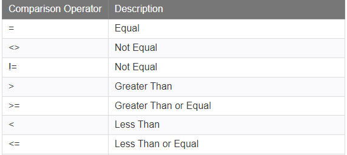
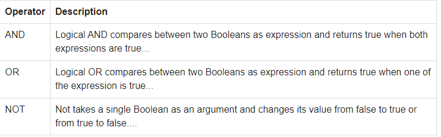
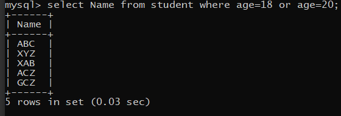
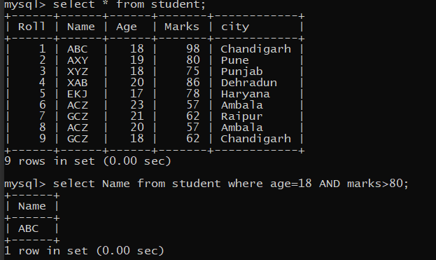
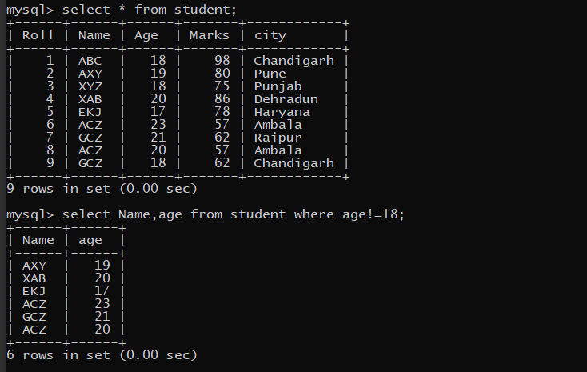
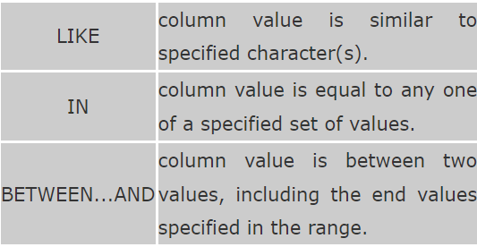
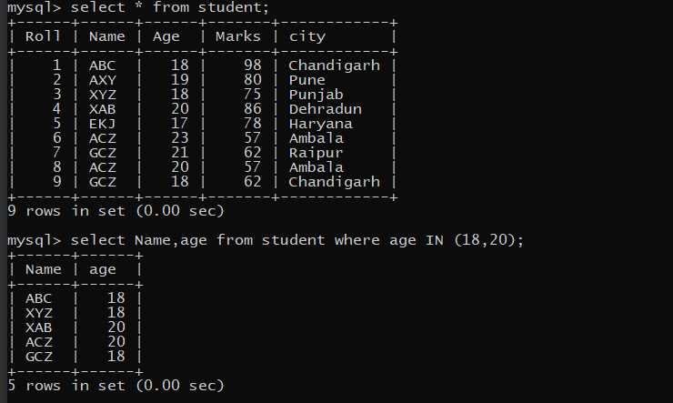
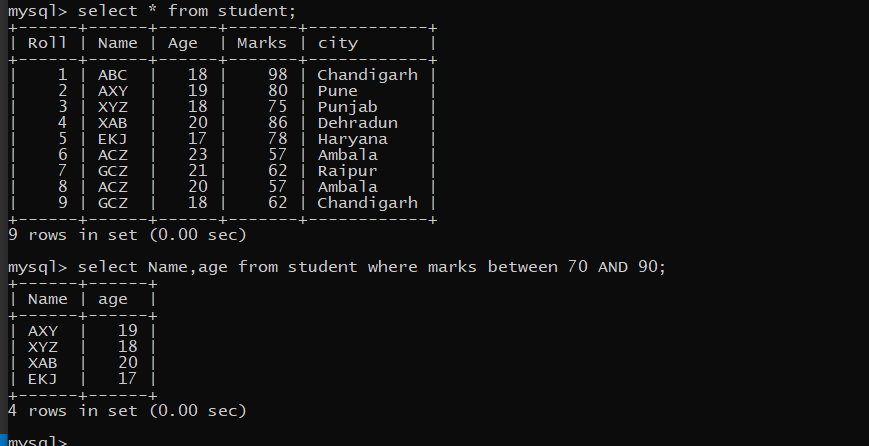

SQL OPERATORS
There are three types of operators used in SQL, namely Comparison Operators, Logical Operators and Special Operators. These operators are used mainly in the WHERE clause, HAVING clause to filter the data to be selected.
(1) Camparison Operators
(2) Logical Operators("OR","AND" & "NOT")
(3) Special Operators("LIKE","IN" & "BETWEEN"
(1) Camparison Operators
Comparison operators are used to compare the column data with specific values in a condition. Comparison Operators are also used along with the SELECT statement to filter data based on specific conditions. The below table describes each comparison operator:

(2) Logical Operators
There are three Logical Operators namely, AND, OR, and NOT. These operators compare two or more than two conditions at a time to determine whether a row can be selected for the output. When retrieving data using a SELECT statement, you can use logical operators in the WHERE clause, which allows you to combine more than one conditions.

(i) "OR" Logical Operator
If you want to select rows that satisfy at least one of the given conditions,you can use the logical operator,OR.
Example:-
To find the names of the student from the "student" table,who are of age 18 and 20,the query would be like:
select Name from student where age=18 or age=20;

(ii) "AND" Logical Operator
If you want to select rows that satisfy all the given conditions,you can use the logical operator,AND.
Example:-
To find the names of the student from the "student" table,who are of age 18 and have marks greater than 80,the query would be like:
select Name from student where age=18 AND marks>80;

(iii) "NOT" Logical Operator
If you want to select rows that donot satisfy a conditions,you can use the logical operator,NOT. NOT results in the reverse of a condition.That is, if a conditon is satisfied, then the row is not returned.
Example:-
To find the names of the student from the "student" table,who are NOT of age 18,the query would be like:
select Name from student where age!=18;

>
(3) Special Operators
There are some special operators available in SQL which are used to enhance the search capabilities
of a SQL query.They are "LIKE","IN" and "BETWEEN" operators.

(i) LIKE Operator(Matching a pattern from a table)
The LIKE operator is used to list all rows in a table whose column values match a specified pattern. It is useful when you want to search rows to match a specific pattern, or when you do not know the entire value. For this purpose, we use wildcard characters '%' and. Where '%' represents a sequence of zero or more characters and represents a single character. The LIKE operator is used only with CHAR and VARCHAR2 to match a pattern.
Example:-
To see the examples click on given questions:-
(ii) "IN" Operator
The IN operator is used to compare a column with more than one value.
It is similar to an OR conditon.
Example:-
To find the names of the student from the "student" table,who are of age 18 and 20,the query would be like:
select Name from student where age IN (18,20)

(iii) BETWEEN Operator
The BETWEEN operator is used to compare data for a range of values.
Example:-
To find the name and age of the student from the "student" table,whose marks are between 70 and 90,the query would be like:
select Name,age from student where marks between 70 AND 90;
